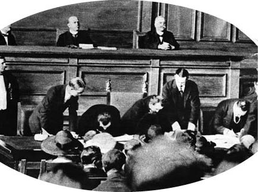

XXVII: MUDANYA MÜTAREKESİ
Lord Curzon’un çabaları sayesinde İtilaf Devletleri arasındaki birlik sağlamlaşmış ve İngiliz, Fransız ve İtalyan hükümetleri, İngiliz hükümetinin 16 Eylül tarihinde göndermiş olduğu “Politika Bildirimi”nden dili ve içeriği açısından oldukça farklı bir “Nota”yı 23 Eylül tarihinde Ankara’daki Büyük Millet Meclisi’ne göndermiştir. Bu nota oldukça uzlaşmacı bir tavırla iletilmiş ve doğrudan Ankara’ya gönderilmiş olması İtilaf Devletleri’nin Büyük Millet Meclisi’ni, Mustafa Kemal’in ilan ettiği üzere Osmanlı İmparatorluğu’ndaki yegane yasal hükümet olarak almasalar da müzakere etmeye hazırlandıkları fiilî hükümet olarak tanıdıklarını göstermiştir. İtilaf Devletleri kendileri, Türk Devleti ve Yunanistan arasında yapılacak nihai barış anlaşmasını görüşmek amacıyla Venedik veya herhangi başka bir şehirde yapılacak olan konferansa temsilci göndermeye hazır olup olmadığı konusunda Ankara hükümetinin kendilerini bilgilendirmesini talep etmiştir. Ayrıca, bu konferansta İngiliz İmparatorluğu, Fransa, İtalya, Japonya, Romanya, Yugoslavya ve Yunanistan’ın da temsilci bulundurması gerektiğini bildirmiştir. İtilaf Birlikleri, Türk Devleti’nin Trakya’da Meriç Nehri ve Edirne’ye kadar olan topraklarını geri almak istemesini, Türk birliklerinin konferans boyunca İtilaf Birlikleri’nin geçici olarak tarafsız ilan ettiği bölgelere girmemesi koşuluyla desteklediğini de iletmiştir. Dahası, Türk Devleti ve komşularının çıkarlarını korumak, barışın kalıcı hale getirilmesi için bazı bölgelerin askerden arındırılmasını sağlamak, Türk otoritesinin bir barış ortamı içerisinde tekrar kurulmasını yardımcı olmak ve son olarak Milletler Cemiyeti’nin himayesi altında Çanakkale, Marmara Denizi ve Boğaziçi’nin özgürlüğü ile birlikte dinî ve millî azınlıkların korunmasını garanti altına almak için bu anlaşmada mutabakata varılarak bazı adımların atılması gerektiğinin de altını çizmiştir. Geriye kalan üç hükümet de Türk Devleti’nin Milletler Cemiyeti’ne kabulünü desteklemiştir. Türk Devleti’ne, birliklerinin İstanbul’dan çekileceğine dair mart ayında vermiş oldukları güvencenin, Barış Antlaşması yürürlüğe girer girmez uygulanacağı ve Yunan kuvvetlerinin, İtilaf Birlikleri generalleri ile Türk ve Yunan askerî yetkililerinin uyum içinde kararlaştıracağı bir noktaya konferanstan önce çekilmesine dair nüfuzlarını kullanacakları iletilmiştir. Bunun karşılığında ise Ankara hükümetinin, konferanstan önce veya konferans boyunca geçici olarak tarafsızlığı ilan edilmiş bölgelere birlik göndermemesi ve Boğazları veya Marmara Denizi’ni geçmemesi beklenmiştir. Yunanların çekileceği noktanın belirlenmesi için Mustafa Kemal ile İtilaf Devletleri arasında Mudanya veya İzmit’te bir toplantının gerçekleştirilmesi gerektiği belirtilmiştir. Nota, “uygar dünyanın uzun zamandır beklediği barışın” tekrar sağlanması konusunda İtilaf Kuvvetleri ile işbirliği yapmalarından ötürü Türk Devleti’nin sıcakkanlılıkla selamlanmasıyla sonlanmıştır.

Mudanya Mütarekesi
Bahsi geçen nota, Sevr Antlaşması’nın nihayet geçersiz kılındığına ve İtilaf Devletleri’nin fitilini kendilerinin ateşlediği ve İngiliz başbakanının Avam Kamarası’nda gerçekleştirdiği konuşmasına kadar desteklediği Yunanistan’ın sebep olduğu felaketlere dair gerekli cezayı ödemesini kararlaştırdıklarına dair ilk resmî bildiri niteliğindedir. Ayrıca, Türk Devleti’nin İtilaf Kuvvetleri’ne karşı sözde “Boğazların Özgürlüğü” dışında sebepsiz yere savaşa girmesinin ardından İngilizlerin bütün savaş emellerinden vazgeçtiğinin de bir göstergesidir. Bağımsız bir Ermeni Devleti ile özerk bir Kürdistan’ın kurulması ve Türk Devleti’nin bütün iç işlerine müdahil olunmasıyla ilgili bütün planlar yerini yalnızca “azınlıkların korunması” maddesine bırakmıştır.
Fakat İngiliz hükümeti, Boğazlar konusunda kararlı olmuş ve Çanakkale Boğazı’nın Asya Yakası’ndaki Çanakkale’yi ne pahasına olursa olsun korumasını salık vererek ve Türklerin Boğazları geçerek İstanbul’u işgal etme çabalarına karşı direnmelerini söyleyerek Türkiye’ye hatırı sayılır bir donanma ile ordu göndermiştir. Bu önlemler, bazı Fransız ve İtalyan birliklerinin tarafsız bölgelerden çekilmesinin bu iki devletin de Türkiye’ye karşı savaşma niyetinin olmadığını göstermesine rağmen, İtilaf Devletleri’nin göndermiş olduğu Nota’ya aykırı olmamıştır. İtilaf Devletleri, İngiliz kuvvetleri gibi hızlı bir şekilde hareket eden ve hatta İngiliz cephelerine kadar İngilizlerin işgal etmiş oldukları bölgelere girmiş olan Mustafa Kemal’in birliği arasında gerçekleşebilecek bir çatışmanın olasılığını güçlendirmiştir. Bu durumla ilgili gerekçeleri, Türk komutanları ve Ankara hükümetinin kazandıkları zaferlerle sarhoş oldukları zamanda, İzmir’de olanlardan sonra, İstanbul’u işgal ederek Trakya’ya ilerlemeye çalışmaları durumunda İtilaf Devletleri tarafından durdurulmuş olmalarıdır. İngiliz hükümetinin, Türk komutanlarıyla Ankara hükümetinin tepkilerinin ne olduğunu bilmeden almış olduğu risk çok büyüktür ve Birinci Dünya Savaşı boyunca mücadele etmiş olan İngiltere’nin neredeyse tamamı Türklere boyun eğmiş bir durumdayken de biraz aşırıdır. Fakat bu durum, oldukça zorlu koşullarda İngiliz kuvvetlerinin başkumandanı olan Charles Harington’un göstermiş olduğu zeka ve cebrinefis ile çözülmüştür. Harington, ilkeleri olan bir insandır ve bir asker için ne denli zor olsa da Türkleri bölgeden dışarı atmak için gerekli kuvveti kullanarak düşmanlığı başlatmasını sağlayacak talimatlarının akıl çelecek kadar önemli olduğunu bilmesine rağmen buna karşı koymuştur. Herhangi bir çatışma içine girmeyi, Türk komutanları ile gerçekleştirilme imkânı olan barış müzakereleri söz konusu ise ertelemeyi uygun bulmuştur. Bu umutları boşa çıkmamıştır. Üç Ekim tarihinde, Mudanya’da bir toplantı düzenlenmiş ve ateşkes şartları İtilaf Devletleri ve Yunan generalleri ile Mustafa Kemal’i temsilen İsmet Paşa arasında görüşülmüştür.
İsmet Paşa, ateşkesin kararlaştırılmasını aşan sorular yönelttiğinde birtakım sorunlar baş göstermiştir. Türk ordularının derhal Doğu Trakya’yı alması ve orada İtilaf Devletleri’nden bağımsız bir Türk yönetiminin kurulmasını talep etmiştir. Bu talepler, İtilaf Devletleri’nin Ankara’ya göndermiş olduğu Nota’nın hükümleriyle ters düşmüş ve Mudanya’daki toplantıya da başkanlık eden M. Franklin Bouillon’un Türklere vermiş olduğu cesaret sayesinde İngiliz ve Fransız hükümetleri arasında ciddi bir fikir ayrılığı doğması riski ortaya çıkmıştır. Bu risk, Lord Curzon’un Paris’e yapmış olduğu kısa bir ziyarette çözülmüş ve bu ziyaretin sonucunda Lord Curzon ile M. Poincare arasında daha önceden varılmış olan mutabakat tekrar doğrulanarak gerekli talimatlar Mudanya’da bulunan İtilaf Devletleri temsilcilerine gönderilmiştir. Bu esnada, İtilaf Devletleri’nin göndermiş olduğu 23 Eylül Notası’na Ankara’dan cevap gelmiş ve bu cevap bazı açılardan muğlak ve yetersiz olmasına rağmen genel anlamda olumsuz olmamıştır. Moskova ile kurmuş olduğu işbirliğine rağmen Ankara hükümeti, Sovyet Devletleri olan Rusya ve Kafkasya’nın konferansa katılması ve İtilaf Devletleri’nin İstanbul’u derhal terk etmesi konusunda ısrarcı olmamış ayrıca İtilaf Devletleri’nin, Türkiye’nin Milletler Cemiyeti’ne girmesi hususunda destekçi olma teklifini reddetmemiş; fakat bu konuyla ilgili görüşlerini vakti geldiğinde açıklayacağını belirterek bu teklife kayıtsız kalmıştır. Türkiye’nin Doğu Trakya üzerindeki haklarını tanıdıkları için İtilaf Devletleri’ne teşekkür etmiş; “İstanbul ve Marmara Denizi’nin güvenliğinin sağlanması için” Boğazların özgürlüğüyle ilgili ve azınlıkların korunmasının “Türk egemenliğinin bağımsızlığına ve Yakın Doğu’da egemenliğin etkin olarak kurulmasına uygun bir şekilde” olmasıyla ilgili maddelerde anlaşmazlık olmadığını bildirmiştir. Nihai barış anlaşmalarının imzalanması için bir konferans düzenlenmesi talebini kabul etmiş ve bu konferansın 20 Ekim tarihinde İzmir’de düzenlenmesini teklif etmiştir. Cevap, uzlaşmacı bir tutumla sonlandırılmıştır:
İtilaf Devletleri’nin göndermiş olduğu Nota ile yapılan çağrı oldukça etkileyicidir ve barışın yeniden sağlanması ve sürdürülmesi konusundaki sadık ve içten yardımlarımızı sunacağımız hususunda İtilaf Devletleri’ni temin ederiz.
İtilaf Devletleri temsilcilerinin, İsmet Paşa’nın taleplerine dair hükümetleri ile görüşme sağlamaları için kısa bir süreliğine ara verilen Mudanya Konferansı tekrar başlatılmış ve temsilcilerin hükümetlerinden almış oldukları yeni talimatlar İsmet Paşa’ya, katiyetleri üzerinde vurgu yapılarak ve aynı zamanda Türkiye’nin bütün millî taleplerinin İtilaf Devletleri tarafından tanınmasından sonra Yakın Doğu’da sağlanacak barışı da riske atmadan, Charles Harington tarafından bildirilmiştir. Ankara’ya yapılan diğer bir bildiri ve taleplerin ardından, General Harington’un bir zamanlar karşı koyduğu, fakat daha sonra korumak için çabaladığı tarafsız bölgelerin Türk birlikleri tarafından alınmasını engellemek adına, uzun bir gecenin sabahında, 11 Ekim gününde bir konvansiyon imzalanmıştır. Yunan temsilcisi, Atina’dan gelmesi beklenen talimatları alana kadar konvansiyonu imzalamamıştır. Londra ve Paris’te bir kez daha, Yunanistan’ın, İtilaf Devletleri’nin desteğine artık güvenilmeyeceğini fark edince beyhude olduğunu anladığı hedeflerinin nedenlerini açıklamak için uzun bir süre önce çekildiği görevine tekrar dönmüş olan M. Venizelos’un talimatları üzerine Yunan hükümeti konvansiyonu imzalamış, fakat Yunan ordusu ve yönetiminin Doğu Trakya’dan çekilmesiyle ilgili verilen sürenin garantiye alınması gerektiğini talep etmiştir.
Mudanya Konvansiyonu’nun girizgâhında, Doğru Trakya ile Edirne’yi Türkiye Büyük Millet Meclisi’ne (TBMM) devretmeyi kabul eden İtilaf Devletleri’ne ait askerî temsilcilerin, Yunan birlikleri ve sivil yönetiminin bölgeden çekilmesine paralel bu bölgeye TBMM yetkilileri ile jandarmanın gönderilmesiyle ilgili tedbirlerin belirlenmesi ve bu süre boyunca bölgede kanunların, düzenin ve güvenliğin sağlanması için, Yunan birliklerinin Doğu Trakya’da çekileceği sınırı belirlemek üzere toplandığı belirtilmiştir.
Delegeler, Türk ve Yunan kuvvetleri arasındaki düşmanlığın bitmesi, konvansiyonun yürürlüğe girmesinden sonra Yunanistan’ın Doğru Trakya’dan çekilmeye başlaması ve on beş gün içinde tamamen çekilmiş olması; sivil otoritelerin, kontrolü aynı gün içinde Türk yetkililerine bırakacak olan İtilaf Devletleri yetkililerine bırakarak bölgeden çekilmesi hususunda mutabakat sağlamıştır. İtilaf Devletleri’nin yedi taburunun bu operasyonları denetlemesi kararlaştırılmıştır. Bu taburlar da Yunan birliklerinin Doğu Trakya’yı boşaltmasından 30 gün sonra veya İtilaf hükümetlerinin, azınlıkların korunmasıyla ilgili kanunların ve düzenin sağlanmasıyla ilgili alınan hükümleri yeterli bulması durumunda 30 günden daha önce geri çekilecektir. Ayrıca, konvansiyon kapsamında, Türkler de İstanbul ve Boğazlar çevresindeki sınırları az da olsa değiştirilmiş olan tarafsız bölgelere saygı duyacağı ve barış antlaşması onaylanana kadar Trakya’ya birlik göndermeyeceği veya o bölgede herhangi bir birlik kurmayacağına dair taahhüt altına alınmıştır.
Mudanya Mütarekesi, Türklerle Yunanlar arasındaki düşmanlığa bir son vermiş ve Türklerle İngilizler arasındaki olası bir çatışma tehlikesini de ortadan kaldırmıştır. Fakat bu mütareke yalnızca barış konferansına giden yolu açan bir ateşkes değildir. Tarihte, Doğu ile Batı arasındaki ilişkilerle ilgili acı bir sayfayı da kapatmıştır. Meşum Sevr Antlaşması’nı ve Türkiye’nin Birinci Dünya Savaşı’na girmesiyle aldığı cezaları ve tebaasına yapmış olduğu zulümleri hafızalardan silmiştir. Türkler, 30 Ekim 1918 tarihinde, Mondros’ta İtilaf Devletleri’nin merhametine sığındığında Türkiye için ölüm çanları çalmıştır. Dört yıl sonra ise Mudanya’da tekrar hayata dönmüş ve bunu Doğu’nun gözünde intikamını almış, İslam’ın zafer kılıcının sahibi ve Asya’nın Batı’ya karşı isyanlarında öncü olarak gerçekleştirmiştir. Bu durum, Kalküta’daki Müslüman Hintlilerle İstanbul’daki Türk nüfusunun coşkulu tezahüratlarıyla karşılanmış ve Türk hükümetinin Birinci Dünya Savaşı’nda devrilmesi ve Türkleri sahip olduklarından men etmek için tasarlanan Sevr Antlaşması’nın oluşturulmasında başrol oynayan İngiltere’ye karşı gösterilerle her yerde coşkuyla kutlanmıştır. Osmanlı İmparatorluğu, 1897 yılındaki Türk-Yunan Savaşı’nda, Yunanları kendi insaflarına bırakmış; fakat İngilizlerle diğer Batılı güçler Yunanistan’ı akılsızlıklarının sonuçlarından kurtarmak için olaylara müdahale etmiştir. Fakat Türklerle ilgili yeni maceralarında, farklı zamanlarda ve farklı derecelerde Yunanistan’ı onaylamış ve cesaretlendirmiş olanlar bu sefer onu kendi kaderine bırakmıştır. Yunanistan’ın düşürüldüğü acı durumu kimse İngiltere’nin paylaştığı şekilde paylaşmamıştır; fakat gelecek, birçok kişinin tahmin ettiğinden daha önce, İngiltere dışındaki diğer Batılı güçlerin, Türkiye’nin bu dirilişinin geniş kapsamlı sonuçlarını paylaşmak durumunda kalmadığını da göstermiştir.